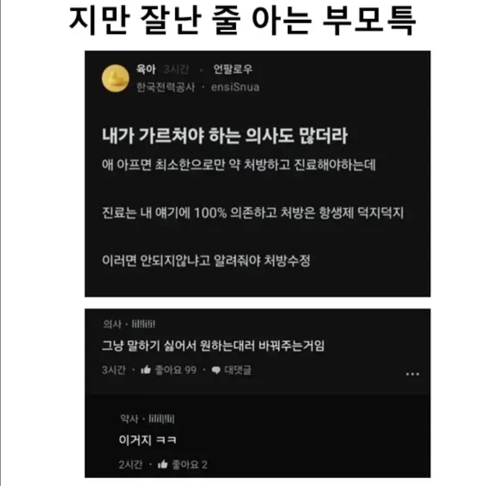

젠장.. 또 한전 당신이냐구!!!

젠장.. 또 한전 당신이냐구!!!
진료라는게 환자 이야기 듣고 증상보고 하는거지
그럼 누구이야기 들음....????
지어내서 처방해??? ㅋㅋㅋ
그... 문진이라는게 있어요...
진료는 당사자와 보호자 말을 듣지 그럼 관심법이나 스토킹으로 알아내?
내시경으로 보거나 피검사하면 왜 또 쓸때없이 검사했냐고 카카오 리뷰 1점과 장문의 리뷰 남김;
저놈도 감전전형으로 취직했구먼
감전 후 살아 남았다? 특채지
엥 감전당했나...?
"항생제 투여 필요성 및 감염으로인한 위험성 설명하였으나 항생제에대한 강한 거부감 표현하며 복용하지않겠다 박박 우기는 모습 관찰됨. 본인 의지하에 항생제 처방하지 않음"
애낳으면서 힘주다가 머리통에 손상이오나 왜 아줌마들은 저런 정신나간 소릴 당당하게 하지
한전 내에는 블라 어그로 동아리가 있는게 100%임
안그러고는 저런 집단적 비정상 행동이 설명이 안됨
전자파가 얼마나 위험한건지 알겟지?
전자파는 민간괴담 따위가 아니였던거다
전자파 차단 스티커와 선인장을 뿌려라
걍 아이디 팔아본놈이 용돈벌이 할수있다고 유행한적이 있는듯
저 회사에선 주기적으로 '누가누가 감전당했나 대회'라도 여나요?
한국 상황이랑 조금 다른 이야기이긴한데...
병원 가기 힘든 외국에서 워크인 클리닉 가면 일반의가 모든 과를 다 진료하는 경우가 있는데... 그런 경우에 의사가 병 오래 앓은 환자한테 물어보고 처방하는 경우 많음;;; 특히 정신과처럼 눈에 안 보이는 질병.
예를 들어, 우울증 환자가 오면, "평소 무슨 약 드셨어요? 늘리거나 줄이고 싶으신거 있으세요? 네 그렇게 드릴게요." 이런 식으로 줌. 환자가 유튜브랑 논문 찾아서 자기가 먹는 약 공부해서 의사 가르쳐야 함.
멀쩡한 사람이 자기 원래 우울증이라 이거 먹고 있다고 구라쳐도 줄거 같더라.
진짜로 줄 걸? 그리고 히스토리는 기본적으로 아픈 환자 본인의 진술이 1순위일 수 밖에 없음. 오히려 환자가 이랬고 저랬다~ 하는 이야기 중에 주증상이랑 연관성 떨어지는 걸 쳐내고 핵심만 남기는 게 일임.
그럼 어떻게 해야됨?
전문의 진료를 받고 싶으면 워크인클리닉에서 레퍼럴(소견서) 써서 상위병원으로 보냄. 그러면 짧으면 한달 길면 네달 기다리면 한국인들이 대학병원 가서 받는 수준의 제대로 된 진료 볼 수 있음.
그리고 여기 현지인들은 패밀리닥터(주치의) 시스템을 이용함. 자기 주치의가 우리 가족만 전담해서 치료해주는 시스템. 그래서 전문의가 소견서를 패밀리닥터한테 내려주면 패밀리닥터가 전문의의 처방대로 환자를 추적관리해주는거임.
근데 나처럼 유학생이면 패밀리닥터 구하기도 쉽지 않고, 전문의 진료 한 번 보려고 두세달 기다리는 것도 현실적이지 않으니까... 그냥 내가 논문 뒤지고 챗지피티한테 물어보고 한국 의사친구한테 카톡하고 해서...내가 진단하고 워크인클리닉 의사한테 약 내놓으라고 하는 편임...
미국에서 봉와직염 걸렸는데 알러지 아니냐고 해서 존나 우겨가지고 항생제 받은적 있음
대학원 가고 박사 따고 이런 애들도 의사랑 기잔치하던데 왜 그런건지 모르겠음.
근데 99퍼는 맘충이겟지만
난진짜내가공부해서 의사가르쳐서 희긔의약품처방받고 치료완료함
대학병원도 2곳가서도 교수도내말안들어줬는데 치료도안되고 강남비뇨기과 일반의원에서 좀유명하긴함 내말들어주고 희귀의약품처방전도 할줄모르는데 해주시고 내가불안해하니까 걱정말라고자기가해주겠다고해서 나앗음
원래 그런 역할을 대학병원에서 해야하는데... 교수님 나이가 좀 있을 가능성이 다분. 로컬도 좀 더 받아들이는 게 빠른 곳이 있고 대학병원도 경직된 곳이 있고 케바케 사바사 심한게 의료인 듯
ㅇㅇ 공부할의사가잇고 그냥 환자개무시하는의사깄고그런듯
대학병원가봐야 어차피 똑같은 루틴항생제
그게안되서 온건데
도대체 왜 저런 건 죄다 한전임 ㅋㅋㅋㅋ
그냥 항생제 먹으면 설사해서 힘들다고 해라
아이고 그렇게 잘알면 의사가 될것이지 왜 한전에 입사한거야
우리나라는 의사가 흔하진 않지만 종합병원 접근성이 아주 높아서 저런게 우스개소리긴 한데
사실 저 밈 자체는 해외에서 항상 도는 밈이다
의사 얼굴 볼 돈 자체가 없는 다수 국가 국민들의 경우
'오늘 초진하는 의사보다 환자의 상태에 빠삭할 가능성이 높다
그러면 의사를 뭐하러 보러 가냐고? 진단서 끊고 보험금 타거나
사망진단 끊으러 가는거지 뭐...
근데 사실 과잉처방이 한국도 제법 있음. 건강한 성인 남성한테 불필요한 항생제 처방이나 단순포진 각막염인데 스테로이드 주거나..둘 다 경험담임
한전은 구술면접 이런거 안함?
한전에 감전사고가 만연하다..